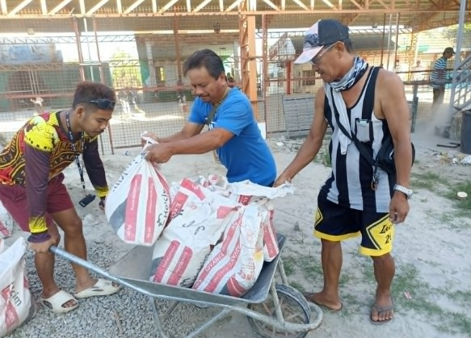

EDWIN TORRES
Ako ay isa sa mga sitio leader ng Danga. Ang mga mamamayan sa sitio na ito ay karaniwang nananawagan sa akin upang matulungan silang lumikas tuwing may paparating na bagyo. Bukod sa pagiging tanod, karpintero din ako upang may pandagdag sa aking ipon para hindi na masyadong mag-alala sa akin ang aking mga anak.
Dito sa Danga, kadalasan ay abot-hita ang baha. Halos lahat ng maliliit na sasakyan, kahit ang service namin sa barangay, ay nais-stranded. Isa sa mga kuwentong tumatak sa akin ay ang pagkawala ng isang kapwa ko kagawad sa kasagsagan ng bagyo. Naalala ko, mula sa bukana malapit sa aming bahay, tumirik ang service ng barangay habang nagpapatrol kami dahil napasukan ng tubig-baha ang makina. Kaya itinulak namin mula Danga hanggang Muzon ang sasakyan.
Pagkatapos maihatid ang service sa barangay, sa kasamaang-palad habang naglalakad kami pauwi, may isang motorsiklong nakabangga sa amin ng aking mga kasamahan. Pagkatapos magpagaling ng tatlong araw, medyo may kaba pa akong pumasok ulit sa barangay, pero nilabanan ko ang trauma at muling pumasok upang makatulong at magpatuloy. Maraming pagkakataon na ang mga responder ng barangay ay kailangang humarap sa mga mapanganib at delikadong sitwasyon upang matupad ang kanilang tungkuling panatilihing ligtas ang komunidad. Hindi ito simpleng trabaho; ito ay isang panata ng paglilingkod na kadalasang nangangailangan ng tapang at sakripisyo. Ako mismo ay hindi pa nakaranas ng batikos sa aking serbisyo.
Gayunpaman, batid ko na hindi lahat ay nakauunawa sa mga hadlang at panganib na kaakibat ng aming operasyon.

Ang panganib ay bahagi ng aming tungkulin, ngunit ang mas mahalaga ay ang katiyakang may mga taong handang mag-alay ng sarili para sa kapakanan ng nakararami. Naniniwala ako na ang bolunterismo sa barangay ay hindi lamang obligasyon, kundi patunay din ng kakayahan ng taong tumulong kahit siya mismo ay may pinagdadaanan.